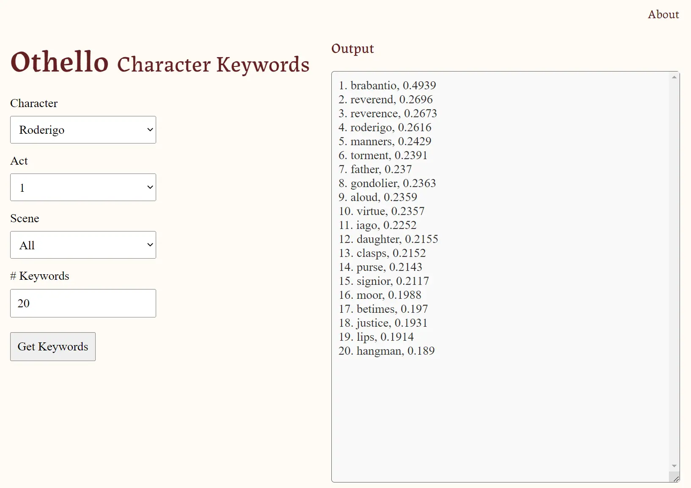
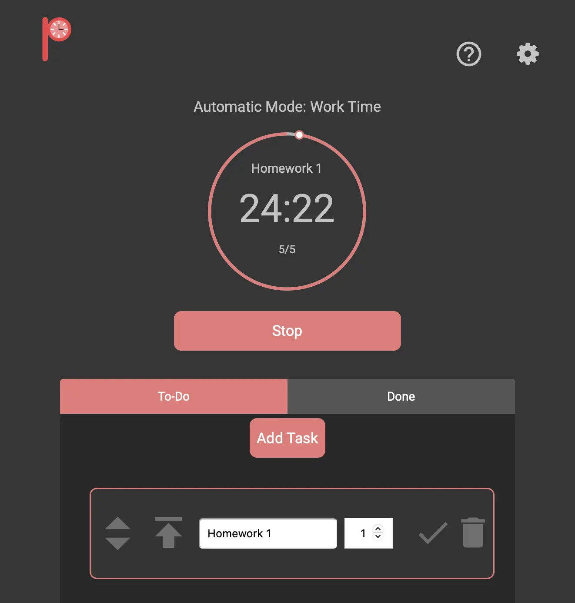

projects
-

Othello CharKey Extractor
Developed a Flask web app called Othello CharKey Extractor (Othello Character Keywords Extractor) for Winter 2023 - Programming for Humanities class. The web app can be used to extract a ranking of keywords from dialogues of significant characters in Shakespeare's play, Othello. The identification and extraction of keywords is performed by KeyBert.
-

Pomodoro Timer Web App
Worked with a team in Winter 2021-Software Engineering class to develop an interactive Pomodoro Timer web app. Took on co-designer role. Worked on design process and implemented the interactive design using HTML, CSS, and JavaScript